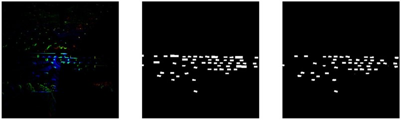
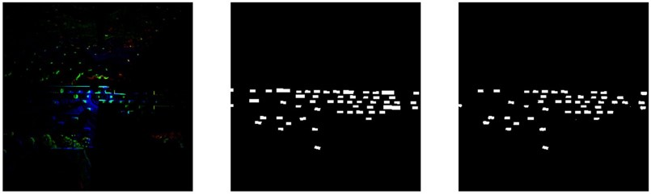

3D Object Detection on LiDAR Point Cloud

Introduction
Autonomous vehicles and robotics applications rely on accurate perception of their surroundings in order to navigate and perform tasks safely and effectively. One key aspect of perception is the ability to detect and classify objects in the environment. Traditional 2D object detection methods, which rely on image data from cameras, can be affected by occlusions and partial visibility of objects in complex and dynamic environments.
LiDAR (Light Detection and Ranging) sensors offer an alternative approach for 3D object detection, as they generate 3D point cloud data using lasers that can provide more accurate localization and orientation estimation of objects.
In this project, we propose a method for 3D object detection using lidar data in autonomous vehicles and robotics applications. Our approach involves representing the point cloud data in voxels, which are 3D grids that partition the data into small cubic cells, and a bird's eye view (BEV) representation, which projects the 3D data onto a 2D plane.
Dataset
We evaluated our approach on the Lyft dataset, which contains real-world urban driving scenarios with both lidar and camera data. The dataset includes a variety of objects, such as vehicles, pedestrians, and traffic signs, in a range of challenging conditions, including occlusions and partial visibility.
The organization of the data into "scenes" and "samples" allows for a clear understanding of the context in which the data was collected. The ego pose data, which includes the poses of the vehicle at specific timestamps, is also important for understanding the movement and positioning of the car within its environment.

Method
Pre-Processing
Voxelization is the process of discretizing a continuous space into a set of discrete 3D cells or "voxels". In the case of lidar point cloud data, voxelization is used to create a 3D grid representation of the data, where each voxel contains a certain number of points within its volume.
After voxelization, the point cloud data was converted into a bird's eye view (BEV) representation. BEV representation is a top-down view of the data, where the x and y axes correspond to the lateral dimensions of the scene and the z-axis corresponds to the height.
Network Architecture
The pre-processed point cloud data was then used to train a neural network using a supervised learning approach using UNet architecture. The UNet architecture was implemented using the TensorFlow deep learning framework and was trained to perform object detection and semantic segmentation.
During training, the network was optimized by minimizing a loss function using the Adam optimizer. We used class weights to handle the imbalanced dataset, assigning higher weights to under-represented classes.
Results
 

Left: LiDAR input, Center: Ground truth labels, Right: Model predictions
Discussion
Our approach achieves strong performance in 3D object detection, outperforming several baseline approaches. The use of lidar data offers several advantages over traditional 2D methods - lidar sensors generate 3D point cloud data using lasers, which allows for improved localization and orientation estimation of objects in dynamic environments.
There are several potential applications in autonomous vehicles and robotics. In autonomous vehicles, accurate 3D object detection is critical for safe navigation and decision-making. In robotics, 3D object detection can be used for tasks such as grasping and manipulation of objects.

Predictions reprojected into 3D space and overlaid with camera images